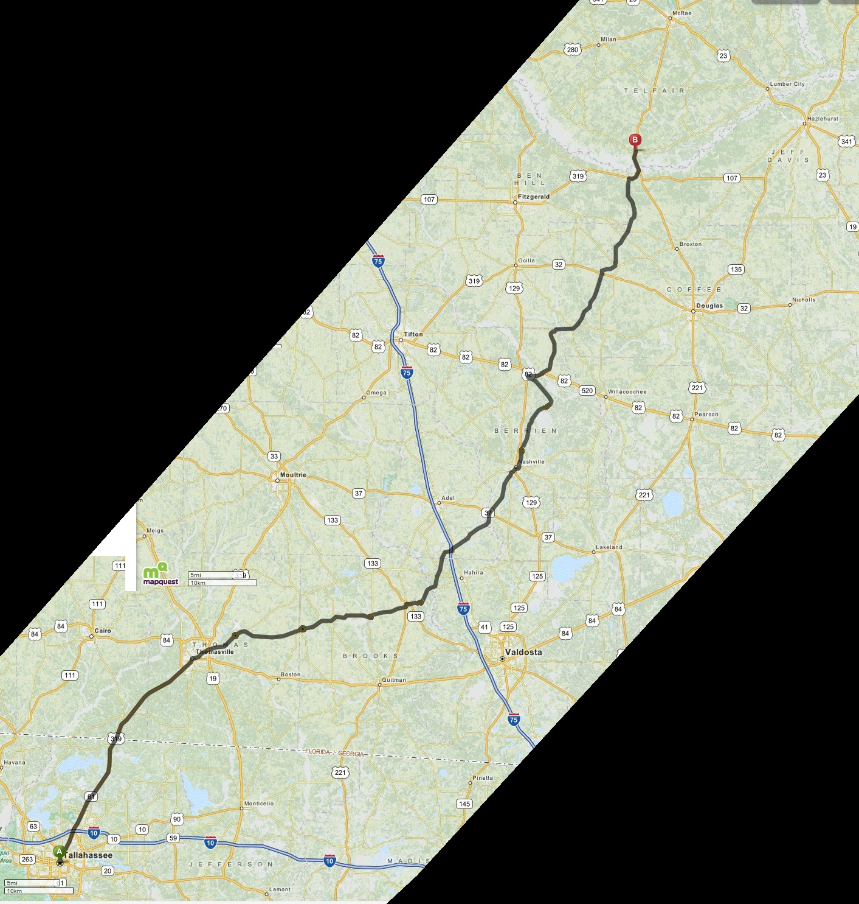

Early roads before Barney
Georgia opened the land that became original Irwin County to settlement after the Creek cessions of 1814 and 1818. The county was created in 1818, surveyed into large land lots, and included in the 1820 land lottery. Survey lines and land titles came before a public road system.[15][16]
James Bagley Clements later wrote that some legislators had opposed creating Early, Irwin, and Appling counties because the state would have to build roads through a country they called "unfinished." His 1932 account is a retrospective, not a transcript of the legislative debate, but the early laws support its basic point. In 1822, the General Assembly appropriated $1,500 to open a road from the Alapaha River through Irwin and Early counties toward Florida. The official 1823 report described nearly ninety miles of newly cut road, several bridges, four ferry flats, and about seven miles still needed to reach a suitable Alapaha crossing.[12][16]
The first settlers therefore entered a surveyed landscape with older Indigenous trails and a few regional travel routes, but little state-built infrastructure. Roads, bridges, ferries, and causeways had to be opened and maintained as settlement spread. By the time Barney was founded beside the railroad in 1897, those projects had produced a network connecting Morven, Mount Zion Camp Ground, family farms, Okapilco Creek, Little River, Folsom Bridge, Rock Hill, Tallokas, Quitman, and surrounding county seats.
The records do not describe one road with one permanent name. Routes and names changed with bridges, farms, and county business.
| Road or corridor | Earliest useful evidence | What is supported |
|---|---|---|
| Coffee Road | 1822 authorization and 1823 state report | Georgia funded and opened a road through Irwin and Early counties toward Florida, including bridges and ferry flats. |
| Quitman to Morven | 1859 road record summarized by Folks Huxford | Brooks County opened a road between the new county seat and the older Morven community. |
| Morven to William Folsom Sr.'s | May 24, 1867 Pike dower transcription | A road ran north from Morven toward Folsom's plantation. The original dower record has not been inspected. |
| Strickland Road | May 11, 1876 newspaper page | A public road called Strickland Road crossed Okapilco Creek at old Hyers Bridge. |
The oldest regional routes
Older trails supplied the first travel lines through South Georgia. The Union Road followed a watershed route south through the future Perry, Vienna, Ashburn, Tifton, and Adel areas toward Troupville and Florida. The Blackshear Road belonged to the War of 1812-era military network and served here as regional routes that shaped later travel toward the Lowndes and Brooks County country, where wet crossings and poor ground often determined where wagons, mail carriers, court parties, and families could travel.[11]
Coffee Road and the local network
On December 23, 1822, Georgia authorized the southern section of the Coffee Road, making it the first state-authorized road through the southern Irwin County area. Governor John Clark appointed General John Coffee and Thomas S. Swain the next day. Georgia's official 1823 report says work ran from August through November 15. The project produced nearly ninety miles of road, while about seven additional miles were still needed to reach a suitable Alapaha crossing. It also included several bridges and four ferry flats. Coffee received the $1,500 appropriation, but the state had supplied poor instructions and no adequate accounting procedure. The 1823 and 1824 committee reports questioned the documentation, not the men's honesty.[12][13]
The 1822 authorization began at the Alapaha River near Cunningham Ford. A separate road from the Ocmulgee to the Alapaha was ordered in 1824 and later became part of the longer corridor remembered as Coffee Road. South of Cecil, the route presents a fork: one path continued through Joyce's Ferry, at the later Miller Bridge crossing, while the other ran toward the Mount Zion area and crossed Little River at the future Folsom Bridge location.
The evidence does not settle which path came first. An 1827 Georgia Senate bill proposed a ferry on Amos Emanuel's land where Coffee Road crossed Little River, but Emanuel's land has not been tied to either later crossing, and the measure does not appear in the published session laws. A reported 1832 legislative bill described Roundtree's Trail meeting Coffee Road “at or near Joyce's ferry.” This places the Joyce route on Coffee Road by 1832 but does not prove that Coffee's crew used it in 1823.[17][18] M. M. Folsom's 1885 article “Down the River,” the only located account that directly describes the original crew's crossing, places it at the future Folsom Bridge location.[9] A modern Old Coffee Road marker and the present road name in Land Lot 282, immediately west of the Mount Zion Camp Ground neighborhood in Land Lot 271, support that general alignment.[10] On the other hand, an 1899 account says Washington Joyce settled east of Little River in 1824 and operated the ferry later replaced by Miller Bridge. The 1908 Brooks County map places Miller Bridge in Land Lot 189 and Folsom Bridge separately upstream in Lot 228.[5][14] No deed or ferry license fixes Joyce's exact landing, and no located 1820s survey, road return, or deed resolves which crossing was original or whether one path was a later realignment.

The road to William Folsom Sr.'s
A modern land-lot map supplies the clearest evidence for an early road through the future Barney area. Its transcription of Jane Joyce Pike's May 24, 1867, dower says her boundary ran east to the "Road from Morven to William Folsom's Sr", then followed it to Slaughters Creek.[1]
The reconstructed road begins near Morven, passes Pike's land in Lots 280, 318, and 319, and continues north to the southern edge of Folsom's plantation, about two miles north of present-day Barney. One segment ran just east of the future town limits and crossed present-day Yates Road in Land Lot 279; that segment's position does not place Folsom's land east of Barney. The road later became part of the Adel-Quitman Road, and sections still open today are known as Ryall Road and Bourquine Road.[1][5]
The route comes from a modern map based on a transcription of the dower record. Because the map does not cite the original record and the original has not been located, the route should be treated as a reconstruction rather than an exact survey.
The Folsom Bridge route
Brooks County's road system became easier to identify after the county was created in 1858. Huxford's courthouse-based history says the Inferior Court projected a Quitman-Morven road in February 1859 and granted it that August.[2]
An original 1875 deed gives the clearest period road name. Land conveyed by W. W. Joyce to Gugie Bourquin bordered the "public road from Quitman to Folsom Bridge".[3] The 1867 and 1875 references may describe overlapping routes or branches, but the records do not settle their exact relationship.
Folsom Bridge itself was named in a Brooks County grand-jury presentment by November 1871.[8] It gave the neighborhood a dependable route toward Hahira and Nashville, although the river, lagoons, and swamp approaches remained difficult in wet weather. The full crossing history is covered on the Folsom Bridge page.
Strickland Road
The name first appears in the Quitman Reporter on May 11, 1876, when a grand jury recommended a bridge over Okapilco Creek “on the public road known as the Strickland road,” at the site of old Hyers Bridge. This proves the road's name, public status, and creek crossing, but not its endpoints, land lot, or namesake.[4]
Simpson Strickland is one possible source of the name. He was an early settler and Lowndes County Inferior Court justice who became captain of the 790th Militia District in 1834. That district, later known as Tallokas, covered part of present-day Brooks County and may then have extended east toward the Mount Zion and Barney area. However, no road order, deed, or tax record connects Simpson Strickland to the road, so the proposed namesake remains unproved.[19]
The 1908 Brooks County map shows a probable crossing in Land Lot 417. The road continues east through Rock Hill and joins the road entering Barney from the west, but the map labels neither Strickland Road nor Hyers Bridge.[5] A 1907 deed places the fork of the Quitman and Strickland roads near Land Lots 227 and 234, showing that the name also survived near the Folsom Bridge side of the network. It does not prove that one uninterrupted Strickland Road connected the 1876 crossing and the 1907 fork.[6]
Today, the section between Third Avenue and Georgia Highway 76 inside the Barney city limits is still signed Strickland Road; east of it, the corridor is Yates Road. The 1908 map also shows a former connection west of Third Avenue that is no longer public. These lines help trace the corridor but do not establish its full nineteenth-century name.
The last road link before the railroad
In 1889, Lowndes County residents debated separate routes from Hahira to Miller Bridge and Folsom Bridge. A September report says petitions had been filed for both roads, commissioners had examined and laid out the routes, and their returns awaited action by the county commissioners. The dispute centered partly on the cost of building two crossings over Frank's Creek less than half a mile apart. By March 1890, McNeill & Rozier's workers were opening the Folsom Bridge route along a land line. An April report credited J. T. McNeil, later identified as James Thomas McNeill, with nearly completing it, and the firm continued improving the road in 1891. Local reports called it McNeill Road by December 1892.[7]
On February 1, 1897, Lowndes County adopted the “Road from Hahira to Folsom bridge known as the McNeill's road” as a public road. A county map from about 1910 labels McNeil Road and shows the separate Hahira-to-Miller Bridge route farther south. McNeill Road ended at Folsom Bridge and did not extend westward to the future location of Barney. Its exact modern alignment and explicit namesake remain unproved.[7]
The road linked Folsom Bridge and the Little River settlements to the railroad depot at Hahira. The Foster page explains how the route served that village's naval-stores business before the South Georgia Railway reached Barney.
Principal sources
- Public Google My Maps project, Circa 1870. Old Irwin. LD 11, 12, 13, 14, 15, 16, Jane Joyce Pike dower transcription dated May 24, 1867. The map does not cite the original dower record.
- Folks Huxford, The History of Brooks County, Georgia, 1858-1948, courthouse-road summary, pp. 69-71.
- W. W. Joyce to Gugie Bourquin, December 20, 1875, Brooks County deed naming the public road from Quitman to Folsom Bridge, FamilySearch image.
- Brooks County grand-jury presentment, Quitman Reporter, May 11, 1876, p. 3, Georgia Historic Newspapers.
- R. D. Flippen, Map of Brooks County, Georgia (Hudgins Co., 1908), Georgia Archives County Maps, record cmf0526.
- Lizzie Williams to Havilla Hall, January 3, 1907, parts of Land Lots 227 and 234, FamilySearch image group 007716399, image 610 of 642, record image.
- Valdosta Times, September 21, 1889, p. 3, report that petitions, route examinations, and returns had been completed for separate Hahira-to-Miller Bridge and Hahira-to-Folsom Bridge roads, Newspapers.com image 889791607; Hahira-to-Folsom Bridge road reports, March 29 and April 12, 1890; August 29, 1891; December 24, 1892; December 5, 1896; and February 13 and May 25, 1897; Map of Lowndes County, Georgia, Hudgins Co./Southern Map Co., about 1910, Georgia Archives county-map record
cmf:352. - Brooks County grand-jury presentment on Folsom Bridge repairs, Quitman Banner, December 1, 1871, p. 2, Georgia Historic Newspapers.
- M. M. Folsom, "Down the River," Savannah Morning News, July 8, 1885, p. 5, Georgia Historic Newspapers.
- Michael Rivera, "Old Coffee Rd historical marker, Brooks County", photograph taken May 21, 2016, Wikimedia Commons, coordinate "30.964150, -83.500714"; checked against the Georgia GIS land-lot layer and the present Old Coffee Road name. The marker falls in Land Lot 282 beside the Mount Zion Camp Ground neighborhood in Land Lot 271. This is modern geographic evidence, not a nineteenth-century route record.
- Ida Belle Williams, History of Tift County (1948), pp. 323–324, for the Union Road's watershed route and regional county-seat connections; project review found no local evidence placing the Union or Blackshear roads through the immediate Barney site.
- Georgia General Assembly, road authorization approved December 23, 1822, and road committee report in Acts of the General Assembly ... 1823, pp. 236–237, Digital Library of Georgia record.
- Georgia General Assembly, follow-up road committee report in Acts of the General Assembly ... 1824, p. 195, Digital Library of Georgia record.
- R. E. L. Folsom, “Historic Sketch of Lowndes County,” The Valdosta Times, October 14, 1899, p. 22, Newspapers.com image 889671343; used for the retrospective Washington Joyce ferry tradition and checked against the 1908 Brooks County map.
- Georgia Archives, “1820 Land Lottery”, identifying the December 15, 1818, and December 16, 1819, authorizing acts and the counties whose lands were distributed.
- James Bagley Clements, History of Irwin County (1932), pp. 12–18 and 129–130, Library of Congress digital edition; the road-objection passage appears on the scans of page 129 and page 130. Clements wrote more than a century after the county-creation debate, so his wording is treated as a later account.
- Journal of the Senate of the State of Georgia (1827), pp. 21, 28, 36, 42, 59–60, Internet Archive; the Amos Emanuel ferry bill passed the Senate but does not appear in the published 1827 session laws.
- Ray City History, “Coffee Road Led to Creation of Lowndes County”, quoting an 1832 legislative bill that placed Coffee Road at or near Joyce's Ferry. The original bill image has not been inspected, and its reference to the Withlacoochee River appears geographically inconsistent with the Little River crossing.
- Folks Huxford, The History of Brooks County, Georgia, 1858-1948, pp. 54–56 and 376–379. Huxford identifies Simpson Strickland as a Lowndes County Inferior Court justice in 1829–1830 and as captain of the 790th Militia District beginning September 3, 1834. He also identifies the later 790th as Tallokas but notes that the original district was much larger and that its boundaries cannot be recovered from the surviving county minutes.